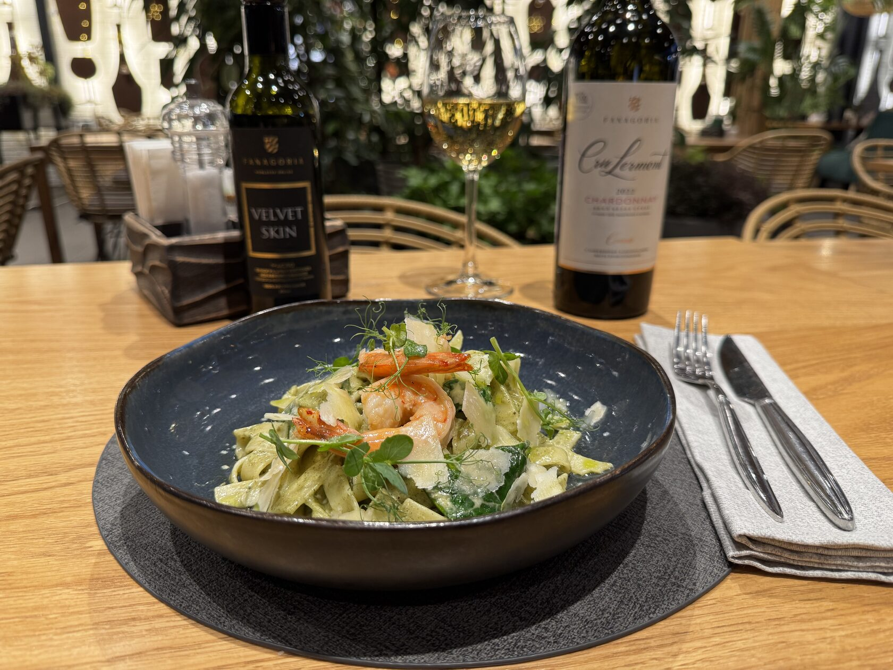
Положите фото в images/zones/hero-food-pasta.jpg — см. images/IMAGE_NAMES.txt
Винодельческое имение «Фанагория» · с 2011 года
Винный ресторан Каберне
Локальная кухня Тамани, вина полуострова и атмосфера залов у винотеки — в одном месте в п. Сенной.
О ресторане
Винный ресторан ОАО «Фанагория». Эногастрономия, сезонное меню и вина Таманского полуострова.
Удобно после экскурсии по заводу, в пути к Крымскому мосту или при посещении «Атамань». Рядом — фирменная винотека.
Залы и зоны
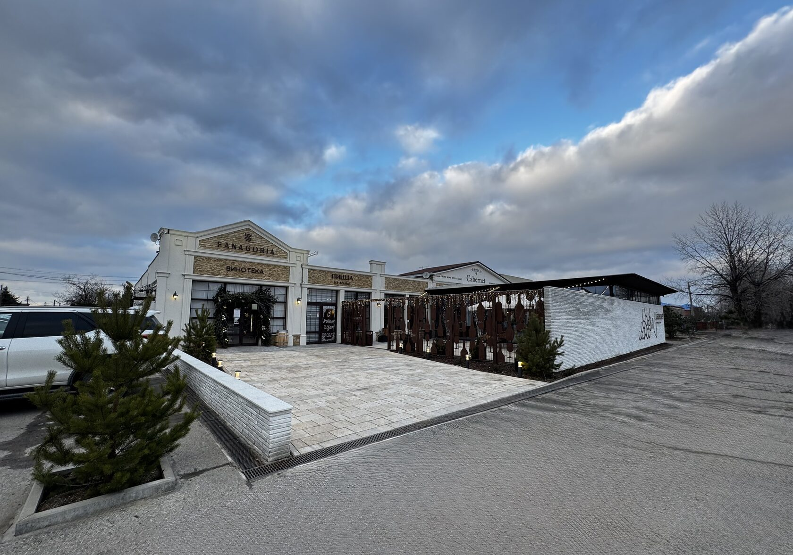
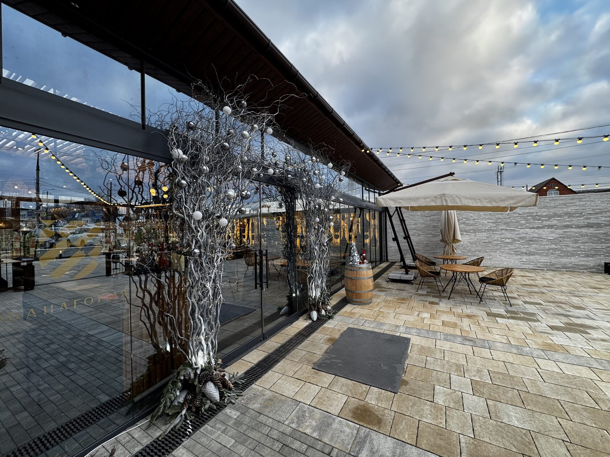
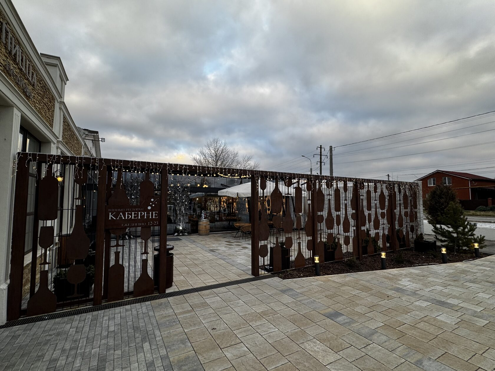
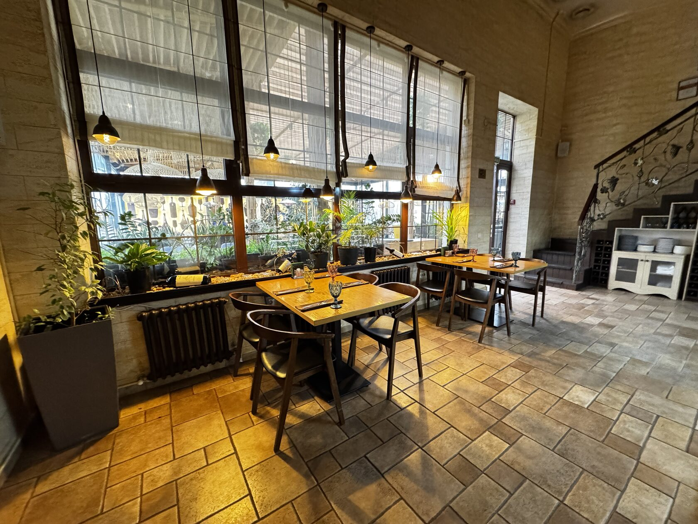
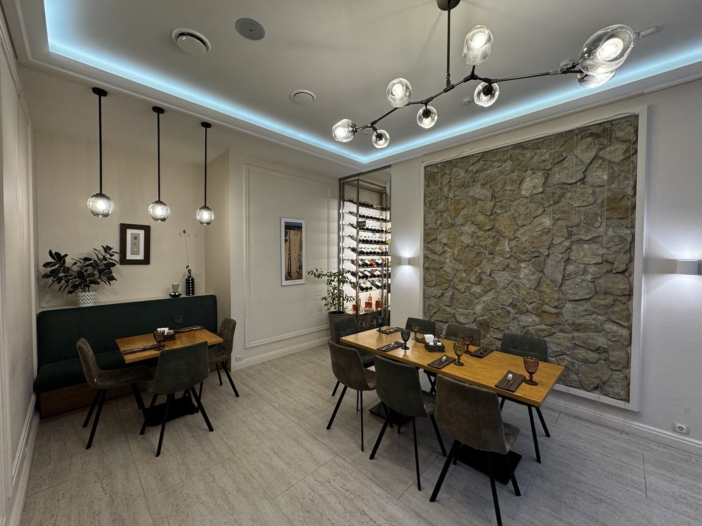
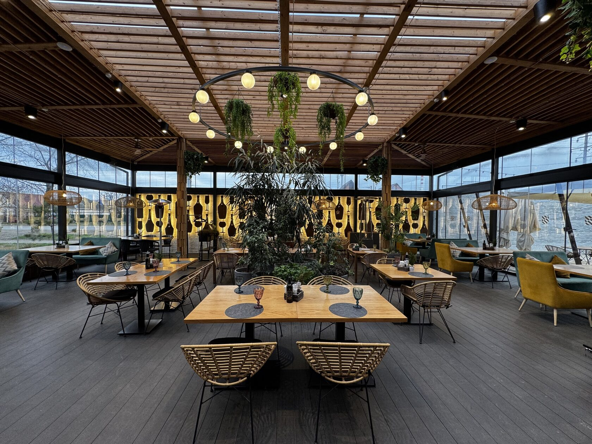
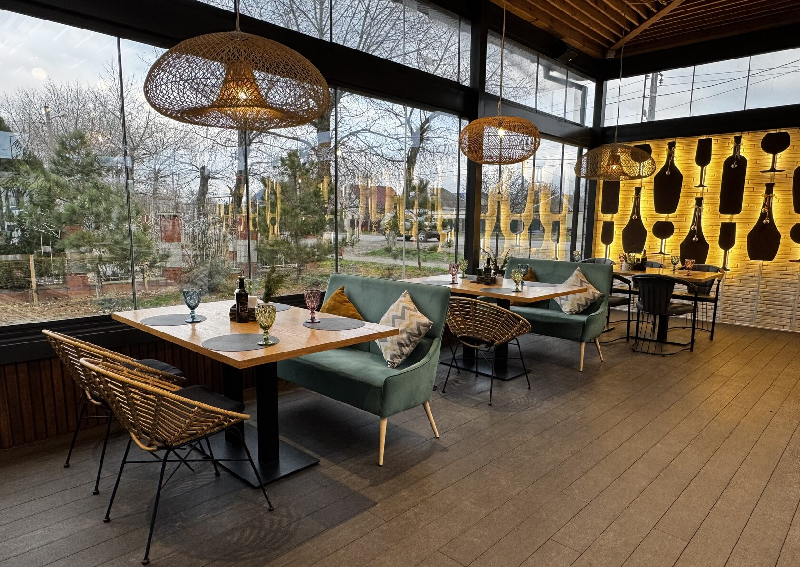
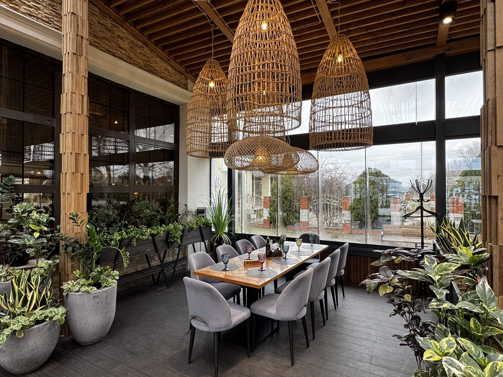
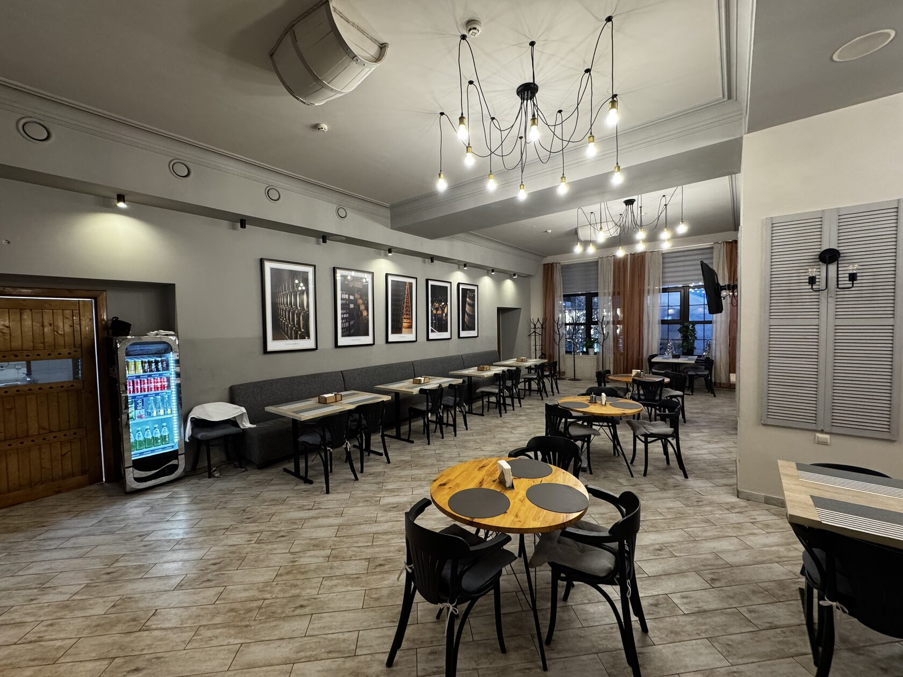
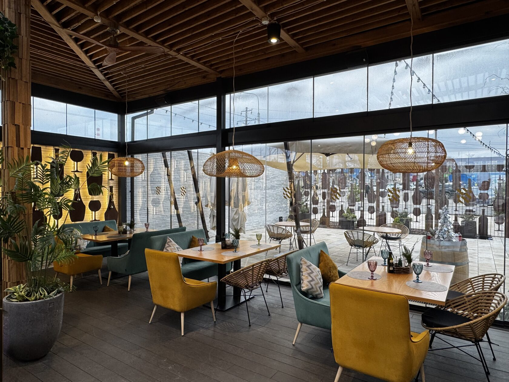
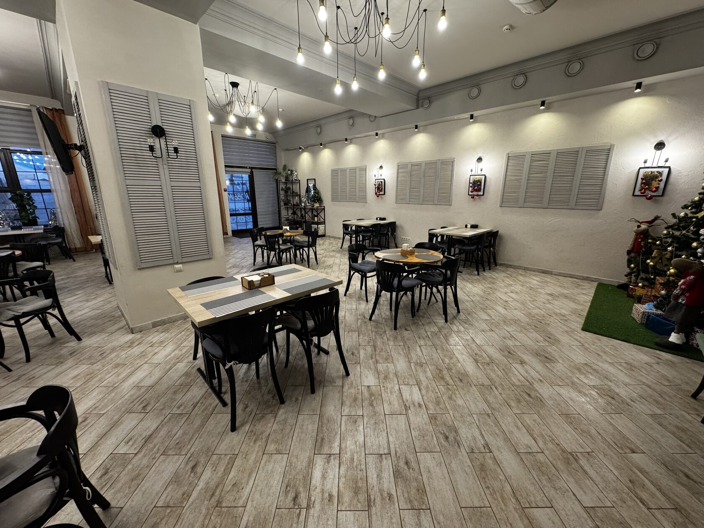
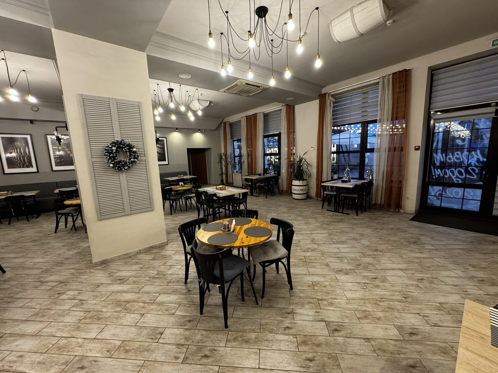
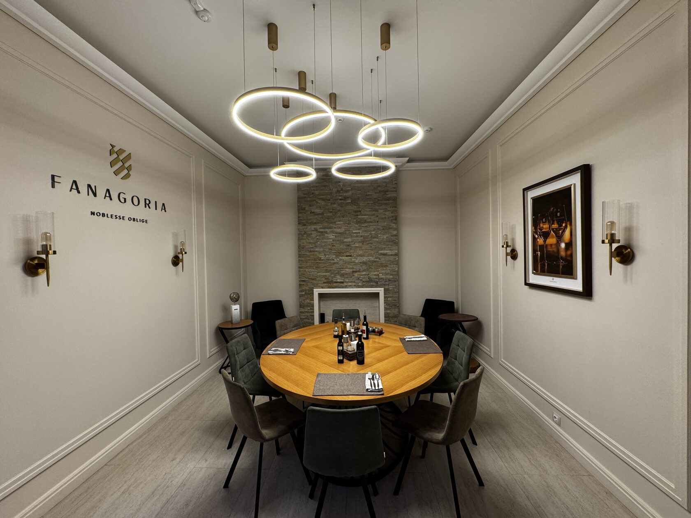
Меню
Верстка в духе печатного меню: бордовые заголовки разделов, вес и цена. Цены и состав актуальны на момент оформления сайта — уточняйте у официанта.
Устрицы дальневосточные
-
Устрица фермерская 450 ₽
-
Дюжина устриц 5 040 ₽
Закуски
-
Икра сыровяленая «Галаган» 140 г 1 200 ₽
Икра пеленгаса, гренки, масло, маринованный имбирь.
-
Рыбные деликатесы 210 г 1 500 ₽
Слабосолёная пеленга, слабосолёный тунец, слабосолёная форель, масло, гренки.
-
Карпаччо из хамсы азовской 130 г 320 ₽
Солёная хамса, кинза, чеснок, перец чили, чипсы из чёрного хлеба, масло.
-
Форель слабой соли 120 г 870 ₽
Форель, масло, тосты из белого багета.
-
Брускетта с форелью 80 г 420 ₽
Чиабатта, сливочный сыр, слабосолёная форель, икра тобико, салат чука.
-
Брускетта с креветками 80 г 420 ₽
Чиабатта, сливочный сыр, свежий огурец, перец пепперони, тигровые креветки.
-
Брускетта с ростбифом 80 г 420 ₽
Чиабатта, соус маринара, говяжья вырезка, сыр дор блю.
-
Тарелка казака 620 г 1 050 ₽
Солёная сельдь, сало солёное, шампиньоны консервированные, квашеная капуста, помидоры консервированные, огурцы консервированные, маринованный лук, лист салата.
-
Ростбиф с гренками и горчицей 130 г 1 150 ₽
Говяжья вырезка, горчица, гренки.
-
Тар-тар из говядины 140 г 870 ₽
Говяжья вырезка, каперсы, маринованный огурец, красный лук, соевый соус, бальзамик, желток перепелиного яйца, гренки.
-
Паштет из куриной печени 70 / 50 г 280 ₽
Куриная печень, шампиньоны, лук, сливки, карамелизированный лук, гренки с маслом трюфельным.
-
Мясной нарез 260 г 1 200 ₽
Окорок запечённый, говяжий язык отварной, суджук, сливочный хрен.
-
Язык говяжий с хреном 140 г 850 ₽
Говяжий язык отварной, сливочный хрен.
-
Сырные деликатесы 230 г 910 ₽
Дор блю, камамбер, пармезан, мёд, орехи.
-
Овощной микс 250 г 🌿 350 ₽
Огурец, помидор, сладкий перец, сельдерей, зелень, соус «Акрополис».
-
Маслины, оливки 90 г 🌿 380 ₽
Супы
-
Том ям с морепродуктами 350 г 🌶 760 ₽
-
Уха черноморская 350 г 400 ₽
-
Казачий борщ со свининой 420 г 360 ₽
-
Казачий борщ с говядиной 420 г 520 ₽
-
Куриный бульон с лапшой 330 г 240 ₽
-
Солянка мясная 400 г 520 ₽
-
Крем-суп из лесных грибов 290 г 480 ₽
-
Крем-суп из тыквы с тигровыми креветками 330 г 420 ₽
-
Луковый крем-суп с беконом 300 г 420 ₽
Картофель, лук, масло, гренки.
Морепродукты
-
Соте из морепродуктов 300 г 960 ₽
Креветка, мидии, кальмар, мясо рапана, лук, белое вино. Соус на выбор: сливочный, сливочно-острый или томатный.
-
Мидии без створок в сливочном соусе 230 г 670 ₽
Мясо мидий, лук, белое вино, сливочный соус.
-
Рапан в темпуре 200 г 600 ₽
Мясо рапана в кляре темпура с соусом айоли.
-
Строганов из рапана 190 г 880 ₽
Мясо рапана с шампиньонами и луком в сливочном соусе, тосты из белого багета.
-
Креветки в темпуре или панко 150 г 750 ₽
Тигровые креветки в темпуре или хрустящей панировке, соус сладкий чили.
-
Креветки «Кимчи» 150 г 🌶 850 ₽
Тигровые креветки в сливочно-остром соусе.
-
Тигровые креветки на гриле за 100 г 780 ₽
-
Гребешки заморские 150 г 1 400 ₽
Дальневосточные гребешки под сливочно-шпинатным соусом с черри.
Горячие закуски
-
Сырные шарики 130 г 320 ₽
Сырные шарики с зеленью и соусом айоли.
-
Хрустящий камамбер 130 г 500 ₽
В хрустящей панировке, ягодный соус.
-
Язык говяжий с лесными грибами 140 г 740 ₽
Запечённый говяжий язык с белыми грибами под сливочным соусом с сыром чеддер.
-
Кальмар по-тайски 100 г 580 ₽
Филе кальмара на гриле под острым соусом с чесноком, перцем чили и кинзой.
-
Рапан со шпинатом 120 г 750 ₽
Мясо черноморского рапана в шпинатном соусе, масло, лук-порей, черри, коньяк.
-
Судак хрустящий с соусом нори 200 г 520 ₽
Филе судака в кляре темпура, соус на основе сметаны, майонеза, кунжутного масла и сладкого чили с нори.
Салаты
-
Хрустящие овощи в азиатском стиле 170 г 390 ₽
Салат айсберг, морковь, сладкий перец, огурцы, сливочный сыр, апельсин, кунжут, соус унаги.
-
Томат, баклажан, сыр страчателла 190 г 450 ₽
Свежие томаты, жареные баклажаны, кинза, чеснок, кунжутный соус, слайсы варёной свёклы.
-
Фреш-салат 180 г 250 ₽
Свежие томаты, огурцы, сладкий перец, салат, зелень; заправка на выбор: сметана, майонез или оливковое масло.
-
Греческий 220 г 450 ₽
Свежие томаты, огурцы, сладкий перец, красный лук, оливки, сыр фета, греческая заправка, прованские травы.
-
Греческий с креветками 270 г 780 ₽
Как греческий, плюс тигровые креветки.
-
Цезарь с креветками 175 г 670 ₽
Салат, черри, перепелиное яйцо, соус цезарь, тигровые креветки, гренки, пармезан.
-
Цезарь с курицей 175 г 450 ₽
Салат, черри, перепелиное яйцо, соус цезарь, куриная грудка, гренки, пармезан.
-
Мясной 230 г 760 ₽
Говяжий язык отварной, курица, говядина, свежие и маринованные огурцы, опята, заправка домашний майонез, чипсы пармезана.
-
Микс салатов, тигровые креветки, трюфельная заправка 210 г 1 100 ₽
Микс салатов, тигровые креветки, перепелиное яйцо, слайсы огурца, перец пепперончино, трюфельная заправка.
-
Тёплый с морепродуктами 240 г 🌶 860 ₽
Микс салатов, сладкий перец, оливки, черри, свежий огурец, мидии, тигровые креветки, кальмар, сливки, соус кимчи.
-
Микс овощей с мраморной говядиной 250 г 760 ₽
Жареные баклажаны, цукини, сладкий перец, черри, мраморная говядина, зелень, оливковое масло, соевый соус.
Рыба
-
Судак с брокколи 300 г 650 ₽
Запечённое филе судака с брокколи под сырно-сливочным соусом.
-
Пеленгас, шпинат, сливки, моцарелла 200 г 700 ₽
Запечённое филе пеленгаса под сливочно-шпинатным соусом с сыром моцарелла.
-
Пеленгас фаршированный под сливочно-икорным соусом 240 г 980 ₽
Филе пеленгаса, фаршированное мятой и сливочным сыром, под сливочно-икорным соусом.
-
Барабуля 200 г 700 ₽
-
Камбала черноморская за 100 г 350 ₽
-
Филе пеленгаса за 100 г 500 ₽
-
Стейк из форели за 100 г 780 ₽
-
Филе судака за 100 г 600 ₽
Паста
-
С морепродуктами и томатами 310 г 🌶 1 050 ₽
Паста тальятелле, тигровые креветки, кальмар, мидии, томатный соус, черри, пармезан.
-
Со шпинатом и креветками 310 г 760 ₽
Паста тальятелле, креветки, сливочно-шпинатный соус, пармезан.
-
С белыми грибами и трюфельным соусом 310 г 930 ₽
Паста тальятелле, белые грибы, шампиньоны, паста белого трюфеля, сливки, пармезан.
-
Четыре сыра 310 г 700 ₽
Паста тальятелле, камамбер, горгонзола, чеддер, пармезан, сливки.
-
Карбонара 310 г 540 ₽
Паста тальятелле, бекон, сливки, желток, пармезан.
Мясо
-
Стейк филе миньон с соусом «Кабернет» за 100 г 1 250 ₽
Говяжья вырезка с ягодным соусом на основе красного вина.
-
Говядина «Кальби» су-вид за 100 г 880 ₽
Запечённые мраморные говяжьи рёбра.
-
Жаркое из говядины 300 г 750 ₽
Говяжья вырезка, картофель, томаты, лук, шампиньоны, сладкий перец, зелень.
-
Жаркое из свинины 300 г 550 ₽
Шейка свинины, картофель, томаты, лук, шампиньоны, сладкий перец, хмели-сунели, зелень.
-
Жаркое из индейки 300 г 650 ₽
Бедро индейки, картофель, лук, шампиньоны, сливки, хмели-сунели, зелень.
-
Котлеты из индейки с пюре 230 г 380 ₽
-
Утиная ножка в апельсиновой глазури 200 г 850 ₽
Утиная ножка су-вид с мёдово-тыквенным пюре.
-
Перепёлка запечённая с розмарином в медовой глазури 1 шт. 980 ₽
Целая перепёлка, пюре с зерновой горчицей.
-
Цыплёнок бедро за 100 г 250 ₽
Куриное бедро без кости на гриле, маринованный лук на лепёшке.
-
Стейк из свинины за 100 г 360 ₽
Стейк из свиной шеи на гриле, маринованный лук на лепёшке.
-
Каре барашка за 100 г 1 150 ₽
Каре ягнёнка на гриле, маринованный лук на лепёшке.
-
Нога барашка томлёная за 100 г 450 ₽
Нога барашка с овощами и красным вином, пюре, тыквенный крем, соус демиглас.
-
Пельмени с говядиной и тыквой 200 г 360 ₽
Пицца на дровах
Все пиццы диаметром 30 см, тесто готовится на дровах в печи при 450 °C. Используем только свежие ингредиенты: моцареллу, томаты, оливковое масло и локальные продукты.
🌿 — вегетарианская, 🌶 — острая (уточняйте по желанию).
Акция: в будни с 12:00 до 16:00 — любая пицца + напиток за 600 ₽ (кроме позиций с креветками и мраморной говядиной).
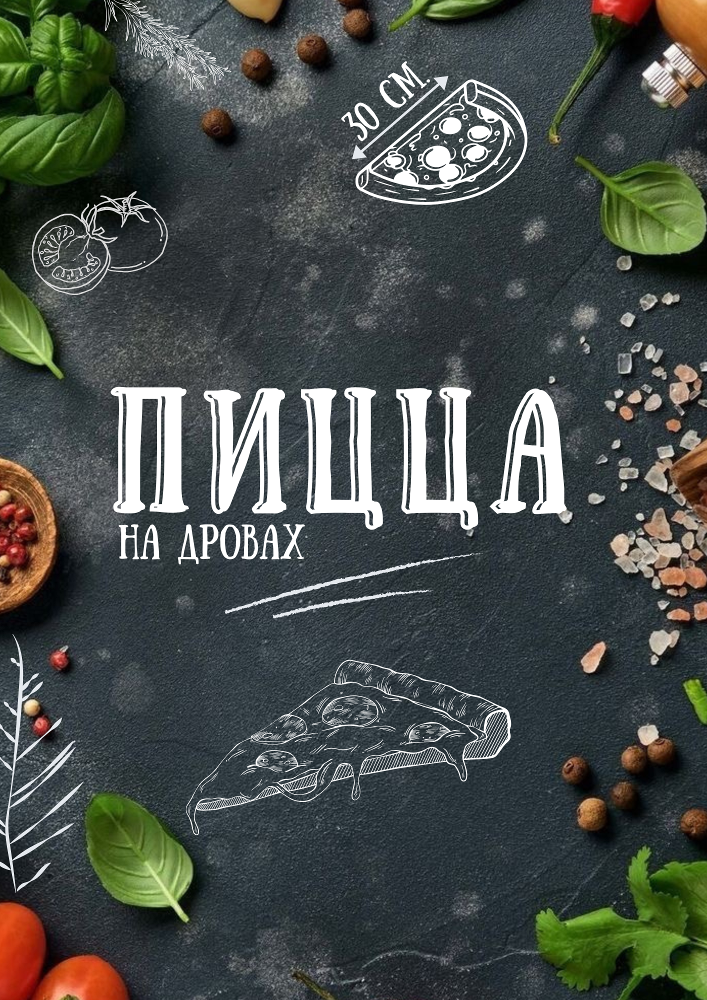
Меню пицц
- Греческая 650 г 🌿800 ₽
Свежие томаты, сладкий перец, маслины, красный лук, сыр моцарелла, сыр фета, прованские травы, сливочный соус.
- Кордон Блю 600 г900 ₽
Цыпленок, бекон, шпинат, сыр моцарелла, сыр пармезан, сливочный соус.
- С креветками, шпинатом и страчателлой 600 г1450 ₽
Сливки, сыр моцарелла, сыр страчателла, креветки, шпинат, томаты черри, микс салатов.
- С грибами и трюфельным соусом 480 г 🌿800 ₽
Сливочный соус, сыр чеддер, моцарелла, паста из белого трюфеля, шампиньоны.
- С мраморной говядиной 500 г1900 ₽
Сливки, соус томатный, говядина, огурцы консервированные, перец чили, лук красный, соус барбекю.
- Маргарита 550 г 🌿580 ₽
Сыр моцарелла, свежие томаты, прованские травы, томатный соус.
- Фермерская 600 г780 ₽
Бекон, ветчина, куриное филе, сыр моцарелла, свежие томаты, томатный соус.
- Ветчина и грибы 540 г650 ₽
Ветчина, грибы, зелень, сыр моцарелла, сливочный соус.
- Курица и грибы 600 г650 ₽
Куриное филе, грибы, свежие томаты, сыр моцарелла, чесночный белый соус.
- Пепперони 500 г 🌶700 ₽
Пепперони, сыр моцарелла, маслины, томатный соус. (Остроту можно регулировать)
- Кватро-Формаджи 420 г 🌿900 ₽
Сыр моцарелла, чеддер, дор-блю, камамбер, сливочный соус.
- Цезарь с курицей 500 г750 ₽
Сыр моцарелла, пармезан, лист салата, свежие томаты, соус цезарь.
- Гавайская 560 г700 ₽
Курица, ананасы, сыр моцарелла, сливочный соус.
🌿 — вегетарианская, 🌶 — острая (по желанию). Диаметр всех пицц — 30 см. Тесто на натуральной закваске, выпечка в дровяной печи.
По желанию можем приготовить пиццу на безглютеновом тесте (доплата 120 ₽).
На гарнир
- Картофель фри 120 г 🌿180 ₽
- Картофельные дольки 120 г 🌿180 ₽
- Картофельное пюре 150 г180 ₽
- Рис-микс 150 г180 ₽
- Овощи гриль за 100 г 🌿180 ₽
- Овощи имбирные за 100 г 🌿180 ₽
- Шампиньоны гриль за 100 г 🌿200 ₽
- Булгур 150 г180 ₽
- Брокколи и цветная капуста на пару за 100 г 🌿180 ₽
На десерт
-
Винный десерт «Кабернет блан» 170 г 450 ₽
Нежное желе из игристого белого вина и лёгкий крем из белого шоколада с ванилью.
-
Конфеты ручной работы 1 шт. 160 ₽
Королевская финиковая с начинкой из сливочного сыра, бельгийского шоколада, орехов и сухоцветов.
-
Штрудель с вишней 170 г 450 ₽
С шариком мороженого.
-
Штрудель с яблоком 170 г 300 ₽
С шариком мороженого.
-
Чизкейк 120 г 310 ₽
Классический сливочный чизкейк с карамельным соусом.
-
Шоколадный тортино 370 ₽
Итальянский пирожное с жидким шоколадом внутри, шарик мороженого.
-
Мороженое 65 г / 1 шарик 90 ₽
Фокачча и хлеб
- Фокачча со шпинатом и сыром 350 г400 ₽
- Фокачча с сыром 250 г300 ₽
- Фокачча с розмарином 200 г 🌿250 ₽
- Фокачча с кунжутом 200 г 🌿250 ₽
- Фокачча с чесночным маслом 200 г 🌿250 ₽
- Французская булочка 40 г 🌿50 ₽
Пшеничная / ржаная — уточняйте у официанта.
Соусы
-
Соусы на выбор 50 г 70 ₽
Айоли, «Акрополис», сырный, кетчуп, тартар, ягодный, клюквенный, «Пылающий красный».
Обеденное меню
12:00 — 15:00
Будние дни. Три комплекса — суп, салат, основное, чиабатта и клюквенный морс.
Сет №1 — 850 ₽
- Суп куриный с лапшой — 200 г
- Салат «Цезарь» с курицей — 90 г
- Котлета из индейки с пюре — 150 г
- Чиабатта — 50 г
- Морс клюквенный — 200 мл
Сет №2 — 1 000 ₽
- Уха — 200 г
- Салат греческий с креветками — 150 г
- Пеленгас со шпинатом — 120 г
- Чиабатта — 50 г
- Морс клюквенный — 200 мл
Сет №3 — 1 150 ₽
- Солянка — 200 г
- Салат овощной в азиатском стиле — 90 г
- Строганов из говядины с пюре — 150 г
- Чиабатта — 50 г
- Морс клюквенный — 200 мл
🌶 — острое. 🌿 — вегетарианское.
QR-коды соцсетей и сайта — как в печатном меню, можно добавить отдельным блоком.
Если у вас аллергия, сообщите об этом официанту.
Вино
В карте — вина и крепкий алкоголь «Фанагория». Сомелье поможет сочетанием к блюдам из меню.
Пресса отмечает пары: брют Primum Alveus к икре «Галаган», Riesling F-style к брускеттам, Clairet к камбале, «Формула Q» к перепёлке.
18+
Чрезмерное употребление алкоголя вредит здоровью.
Банкеты
Банкетный зал до 60 гостей, общая вместимость после обновления террасы — до 120 гостей. Корпоративы, свадьбы, большие компании.
Обсудить по телефонуНа вывеске у террасы: ежедневно 12:00–23:00.
— по фото входной группы